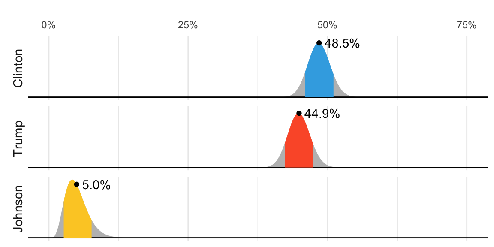

11 Bayesian Statistics
In 2016, FiveThirtyEight showed this chart depicting distributions for the percent of the popular vote for each candidate:
But what does this mean in the context of the theory we have previously covered, in which these percentages are considered fixed? Furthermore, election forecasters make probabilistic statements such as “Obama has a 90% chance of winning the election.” Note that in the context of an urn model, this would be equivalent to stating that the probability of \(p>0.5\) is 90%. However, in the urn model \(p\) is a fixed parameter and it does not make sense to talk about probability. With Bayesian statistics, we assume \(p\) is a random variable, and thus, a statement such as “90% chance of winning” is consistent with the mathematical approach. Forecasters also use models to describe variability at different levels. For example, sampling variability, pollster to pollster variability, day to day variability, and election to election variability. One of the most successful approaches used for this are hierarchical models, which can be explained in the context of Bayesian statistics.
In this chapter, we will briefly describe Bayesian statistics. We use three cases studies: 1) interpreting diagnostic tests for a rare disease, and 2) estimating the probability of Hillary Clinton winning the popular vote in 2016 using pre-election poll data.
The approach described in the previous chapters, where parameters are treated as fixed, is known as the frequentist approach. The term frequentist comes from the idea that probability is interpreted as the long-run frequency of events. Parameters are considered fixed and unknown, while data is seen as random. Frequentist methods rely on how often an outcome would occur if an experiment were repeated many times, focusing on the frequency of observed results rather than assigning probabilities to the parameters themselves.
11.1 Bayes theorem
We start by describing Bayes theorem, using a hypothetical cystic fibrosis test as an example.
Suppose a test for cystic fibrosis has an accuracy of 99%. We will use the following notation:
\[ \mathrm{Pr}(+ \mid D=1)=0.99, \mathrm{Pr}(- \mid D=0)=0.99 \]
with \(+\) meaning a positive test and \(D\) representing if you actually have the disease (1) or not (0).
Imagine we select a random person and they test positive. What is the probability that they have the disease? We write this probability as \(\mathrm{Pr}(D=1 \mid +)\).
To answer this question, we will use Bayes theorem, which tells us that:
\[ \mathrm{Pr}(A \mid B) = \frac{\mathrm{Pr}(B \mid A)\mathrm{Pr}(A)}{\mathrm{Pr}(B)} \]
This equation, when applied to our problem, becomes:
\[ \begin{aligned} \mathrm{Pr}(D=1 \mid +) & = \frac{ \mathrm{Pr}(+ \mid D=1) \, \mathrm{Pr}(D=1)} {\mathrm{Pr}(+)} \\ & = \frac{\mathrm{Pr}(+ \mid D=1) \, \mathrm{Pr}(D=1)} {\mathrm{Pr}(+ \mid D=1) \, \mathrm{Pr}(D=1) + \mathrm{Pr}(+ \mid D=0) \mathrm{Pr}( D=0)} \end{aligned} \]
The cystic fibrosis rate is 1 in 3,900, which implies that \(\mathrm{Pr}(D=1)\approx0.00025\). Plugging in the numbers, we get:
\[ \mathrm{Pr}(D=1 \mid +) = \frac{0.99 \cdot 0.00025}{0.99 \cdot 0.00025 + 0.01 \cdot (.99975)} \approx 0.02 \]
According to the above, despite the test having 0.99 accuracy, the probability of having the disease given a positive test is only 0.02. This might seem counter-intuitive to some, but it is because we must factor in the very rare probability that a randomly chosen person has the disease. To illustrate this, we run a Monte Carlo simulation.
We start by randomly selecting 100,000 people from a population in which the disease in question has a 1 in 4,000 prevalence.
Note that, as expected, there are very few people with the disease and many people without the disease,
This makes it more probable that we will see some false positives given that the test is not perfect. Now, each person gets the test, which is correct 99% of the time:
Since the number of healthy individuals is much larger than the number of individuals with the disease, even a low false positive rate results in more healthy individuals testing positive than actual cases.
table(D, test)
#> test
#> D - +
#> 0 99012 965
#> 1 0 23From this table, we see that the proportion of positive tests that have the disease is 23 out of 988. We can run this over and over again to see that, in fact, the probability converges to about 0.02.
11.2 Priors and posteriors
In the previous chapter, we computed an estimate and margin of error for the difference in popular votes between Hillary Clinton and Donald Trump. We denoted the parameter, the difference in popular votes, with \(\theta\). The estimate was between 2 and 4 percent, and the confidence interval did not include 0. A forecaster would use this to predict Hillary Clinton would win the popular vote. But to make a probabilistic statement about winning the election, we need to use a Bayesian approach.
We start the Bayesian approach by quantifying our knowledge before seeing any data. This is done using a probability distribution referred to as a prior. For our example, we could write:
\[ \theta \sim N(\theta_0, \tau) \]
We can think of \(\theta_0\) as our best guess for the popular vote difference had we not seen any polling data, and we can think of \(\tau\) as quantifying how certain we feel about this guess. Generally, if we have expert knowledge related to \(\theta\), we can try to quantify it with the prior distribution. In the case of election polls, experts use fundamentals, which include, for example, the state of the economy, to develop prior distributions.
The data is used to update our initial guess or prior belief. This can be done mathematically if we define the distribution for the observed data for any given \(\theta\). In our particular example, we would write down a model for the average of our polls. If we fixed \(\theta\), this model is the same we used in the previous chapter:
\[ \bar{Y} \mid \theta \sim N(\theta, \sigma/\sqrt{N}) \]
As before, \(\sigma\) describes randomness due to sampling and the pollster effects. In the Bayesian contexts, this is referred to as the sampling distribution. Note that we write the conditional \(\bar{Y} \mid \theta\) because \(\theta\) is now considered a random variable.
We do not show the derivations here, but we can now use calculus and a version of Bayes’ Theorem to derive the conditional distribution of \(\theta\) given the observed data, referred to as the posterior distribution. Specifically, we can show that \(\theta \mid \bar{Y}\) follows a normal distribution with expected value:
\[ \mathrm{E}[\theta \mid \bar{Y}] = B \theta_0 + (1-B) \,\bar{Y} \mbox{ with } B = \frac{\sigma^2/N}{\sigma^2/N+\tau^2} \]
and standard error :
\[ \mathrm{SE}[\mu \mid \bar{Y}] = \sqrt{\frac{1}{N/\sigma^2+1/\tau^2}}. \]
Note that the expected value is a weighted average of our prior guess \(\theta_0\) and the observed data \(\bar{Y}\). The weight depends on how certain we are about our prior belief, quantified by \(\tau^2\), and the variance \(\sigma^2/N\) of the summary of our observed data.
This weighted average is sometimes referred to as shrinking because it shrinks estimates towards a prior value. To see this note that we can rewrite the weighted average as:
\[ B \theta_0 + (1-B) \bar{Y}= \theta_0 + (1-B)(\bar{Y}-\theta_0)\\ \] The closer \(B\) is to 1, the more we shrink our estimate toward \(\theta_0\).
These formulas are useful way quantifying how we update our beliefs.
11.3 Credible intervals
We can also report intervals with high probability of occurring given our model. Specifically, for any probability value \(\alpha\) we can use the posterior distribution to construct intervals centered at our posterior mean and with \(\alpha\) chance of occurring. These are called credible intervals.
As an example, we compute a posterior distribution and construct a credible interval for the popular vote difference, after defining a prior distribution with mean 0% and standard error 5%. This prior distribution can be interpreted as follows: before seeing polling data, we don’t think any candidate has the advantage, and a difference of up to 10% either way is possible.
theta_0 <- 0
tau <- 0.05We can then compute the posterior distribution by applying the equations above to the one_poll_per_pollster data defined in Chapter 10:
res <- one_poll_per_pollster |>
summarise(y_bar = mean(spread), sigma = sd(spread), n = n())
B <- with(res, sigma^2/n / (sigma^2/n + tau^2))
posterior_mean <- B*theta_0 + (1 - B)*res$y_bar
posterior_se <- with(res, sqrt(1/(n/sigma^2 + 1/tau^2)))
posterior_mean + c(-1, 1)*qnorm(0.975)*posterior_se
#> [1] 0.0203 0.0397Furthermore, we can now make the probabilistic statement that we could not make with the frequentists approach. Specifically, \(\mathrm{Pr}(\mu>0 \mid \bar{X})\) can be computed as follows:
1 - pnorm(0, posterior_mean, posterior_se)
#> [1] 1According to the calculation above, we would be almost 100% certain that Clinton will win the popular vote, an estimate that feels overly confident. Moreover, it does not align with FiveThirtyEight’s reported probability of 81.4%. What accounts for this difference? Our current model does not yet capture all sources of uncertainty. We will revisit this issue and address the missing variability in Chapter 12.
11.4 Exercises
1. In 1999, in England, Sally Clark1 was found guilty of the murder of two of her sons. Both infants were found dead in the morning, one in 1996 and another in 1998. In both cases, she claimed the cause of death was sudden infant death syndrome (SIDS). No evidence of physical harm was found on the two infants, so the main piece of evidence against her was the testimony of Professor Sir Roy Meadow, who testified that the chances of two infants dying of SIDS was 1 in 73 million. He arrived at this figure by finding that the rate of SIDS was 1 in 8,500, and then calculating that the chance of two SIDS cases was 8,500 \(\times\) 8,500 \(\approx\) 73 million. Which of the following do you agree with?
- Sir Meadow assumed that the probability of the second son being affected by SIDS was independent of the first son being affected, thereby ignoring possible genetic causes. If genetics plays a role then: \(\mathrm{Pr}(\mbox{second case of SIDS} \mid \mbox{first case of SIDS}) > \mathrm{Pr}(\mbox{first case of SIDS})\).
- Nothing. The multiplication rule always applies in this way: \(\mathrm{Pr}(A \mbox{ and } B) =\mathrm{Pr}(A)\mathrm{Pr}(B)\)
- Sir Meadow is an expert and we should trust his calculations.
- Numbers don’t lie.
2. Let’s assume that there is, in fact, a genetic component to SIDS and the probability of \(\mathrm{Pr}(\mbox{second case of SIDS} \mid \mbox{first case of SIDS}) = 1/100\), is much higher than 1 in 8,500. What is the probability of both of her sons dying of SIDS?
3. Many press reports stated that the expert claimed the probability of Sally Clark being innocent was 1 in 73 million. Perhaps the jury and judge also interpreted the testimony this way. This probability can be written as the probability of a mother is a son-murdering psychopath given that two of her children are found dead with no evidence of physical harm. According to Bayes’ rule, what is this?
4. Assume that the chance of a son-murdering psychopath finding a way to kill her children, without leaving evidence of physical harm, is:
\[ \mathrm{Pr}(A \mid B) = 0.50 \]
with A = two of her children are found dead with no evidence of physical harm, and B = a mother is a son-murdering psychopath = 0.50. Assume that the rate of son-murdering psychopath mothers is 1 in 1,000,000. According to Bayes’ Theorem, what is the probability of \(\mathrm{Pr}(B \mid A)\) ?
5. After Sally Clark was found guilty, the Royal Statistical Society issued a statement saying that there was “no statistical basis” for the expert’s claim. They expressed concern at the “misuse of statistics in the courts”. Eventually, Sally Clark was acquitted in June 2003. What did the expert miss?
- He made an arithmetic error.
- He made two mistakes. First, he misused the multiplication rule and did not take into account how rare it is for a mother to murder her children. After using Bayes’ rule, we found a probability closer to 0.5 than 1 in 73 million.
- He mixed up the numerator and denominator of Bayes’ rule.
- He did not use R.
6. Florida is one of the most closely watched states in U.S. elections because it has many electoral votes, giving it a large influence on the final result. Before 2016, Florida was a swing state where both Republicans and Democrats won implying it could affect a close elections.
Create the following table with the polls taken during the last two weeks:
Take the average spread of these polls. The CLT tells us this average is approximately normal. Calculate an average and provide an estimate of the standard error. Save your results in an object called results.
7. Now assume a Bayesian model that sets the prior distribution for Florida’s election night spread \(\theta\) to follow a normal distribution with expected value \(\theta_0\) and standard deviation \(\tau\). What are the interpretations of \(\theta\) and \(\tau\)?
- \(\theta_0\) and \(\tau\) are arbitrary numbers that let us make probability statements about \(\theta\).
- \(\theta_0\) and \(\tau\) summarize what we would predict for Florida before seeing any polls. Based on past elections, we would set \(\theta\) close to 0, because both Republicans and Democrats have won, and \(\tau\) at about \(0.02\), because these elections tend to be close.
- \(\theta_0\) and \(\tau\) summarize what we want to be true. We therefore set \(\theta_0\) at \(0.10\) and \(\tau\) at \(0.01\).
- The choice of prior has no effect on Bayesian analysis.
8. The CLT tells us that our estimate of the spread \(\hat{\theta}\) has normal distribution with expected value \(\theta\) and standard deviation \(\sigma\) calculated in exercise 6. Use the formulas we provided for the posterior distribution to calculate the expected value of the posterior distribution if we set \(\theta_0 = 0\) and \(\tau = 0.01\).
9. Now compute the standard deviation of the posterior distribution.
10. Using the fact that the posterior distribution is normal, create an interval that has a 95% probability of occurring centered at the posterior expected value. Note that we call these credible intervals.
11. According to this analysis, what was the probability that Trump wins Florida?
12. Now use sapply function to change the prior variance from seq(0.005, 0.05, len = 100) and observe how the probability changes by making a plot.
https://en.wikipedia.org/wiki/Sally_Clark↩︎